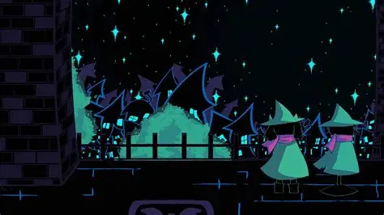

Os Dark Worlds, ou Mundos Sombrios, são dimensões misteriosas que fazem parte do universo de Deltarune. Eles são criados a partir das chamadas Dark Fountains, fontes de energia sombria que conectam o mundo da luz a essas novas dimensões. Quando uma fonte é criada, um local comum do mundo real pode se transformar completamente, adquirindo características fantásticas e dando vida a objetos que normalmente seriam inanimados. Os habitantes dos Dark Worlds são conhecidos como Darkners. Eles são seres que possuem suas próprias personalidades, histórias, funções e relações. Muitos deles parecem estar relacionados aos objetos existentes no local de origem do Dark World. Por isso, diferentes mundos possuem personagens e ambientes muito diferentes entre si.
Uma das características mais importantes dos Dark Worlds é que eles não são simplesmente lugares iguais ao mundo real. Quando Kris e seus companheiros entram nesses mundos, os ambientes assumem novas formas. Uma sala de aula pode se tornar um reino medieval, enquanto uma biblioteca pode se transformar em uma enorme cidade tecnológica. Os Dark Worlds também possuem diferentes regiões, cidades, castelos, florestas e áreas perigosas. Durante suas viagens, Kris, Susie e Ralsei encontram inimigos, comerciantes, habitantes e personagens que podem ajudá-los ou atrapalhar seu caminho.
As Dark Fountains possuem uma grande importância para a história. Ralsei explica que existem fontes responsáveis pela criação dos Dark Worlds e que o excesso delas pode trazer consequências graves para o equilíbrio entre a luz e a escuridão. Por esse motivo, Kris e seus companheiros precisam lidar com as fontes que encontram durante suas aventuras. Outro elemento importante é a relação entre os Lightners e os Darkners. Kris, Susie e outros personagens do mundo da luz são chamados de Lightners, enquanto os habitantes dos Dark Worlds são Darkners. Apesar dessa diferença, os dois grupos podem formar amizades e trabalhar juntos. Cada Dark World possui uma identidade própria. O cenário, os inimigos, os personagens e até mesmo o estilo das áreas podem mudar completamente dependendo do local onde a Dark Fountain está localizada. Essa variedade é uma das características que tornam a exploração de Deltarune diferente em cada capítulo.
